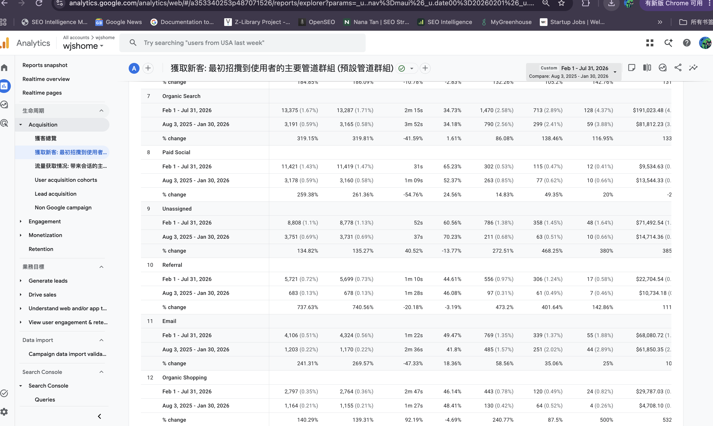
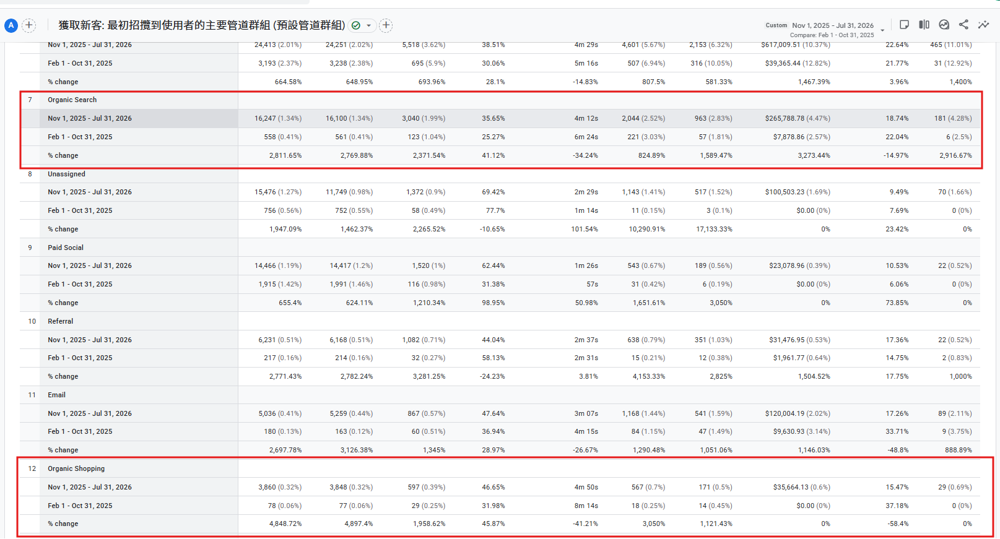
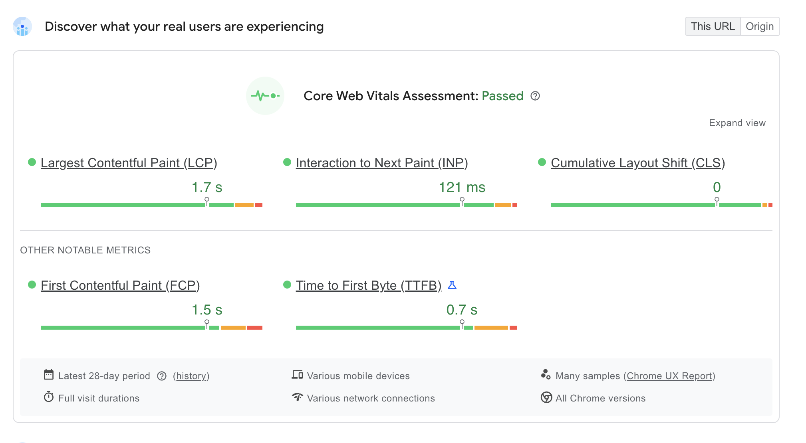

← Cases
E-commerce SEO
E-commerce SEO for organic revenue and product discovery.
As the dedicated hands-on SEO specialist for WJS Home, I reported to one direct supervisor while independently managing the website's day-to-day SEO execution. My work covered Shopify technical SEO, content optimization, product and collection page growth, performance analysis, developer coordination, authority building, and implementation QA.
$260K+Cumulative organic search revenue
+133.5%6-month organic search revenue growth
16.7KGSC clicks
1.16MGSC impressions
Strategy & Execution
- Plan content around buying decisions: Used customer needs and search intent to plan blogs, buying guides, collection pages, and product pages. Linked these pages to help readers find products. Along with page and technical improvements, the project recorded $260K+ in organic search revenue. Revenue in the latest six-month period grew 133.5% versus the previous comparable period.
- Tell the brand story on key pages: Worked on homepage and About Us copy. Explained the brand story and product value in clear English, keeping the message consistent across brand and product content.
- Test ideas on collection and product pages: Improved keywords, titles, descriptions, copy, images, and internal links. Tried A/B tests on collection and product pages to guide further content and conversion improvements.
- Recover traffic by improving content: Used GSC data to find overlapping topics and pages with unclear roles. Merged similar content and added reliable sources and original analysis. Daily search clicks recovered from single digits to about 100 within three months.
- Turn technical audits into completed fixes: Checked crawling, indexing, canonicals, redirects, duplicate content, schema, and Core Web Vitals. Set priorities, worked with developers, and checked the changes after release. The site passed Core Web Vitals with LCP of 1.7s, INP of 121ms, and CLS of 0.
- Coordinate writers and off-site content: Sent briefs to freelance writers and followed up on their work. Supported regular publishing and site authority through relevant backlinks, short-form content, and digital PR content.
Organic search revenue exceeded $260K in total. Revenue in the latest six-month period grew 133.5% versus the previous comparable period.





1 / 7